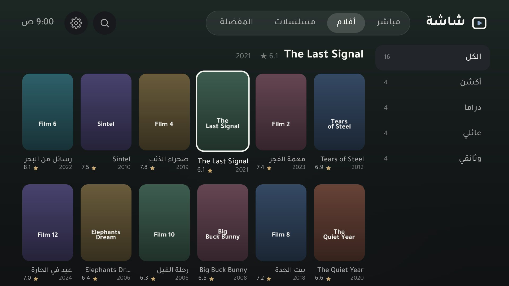
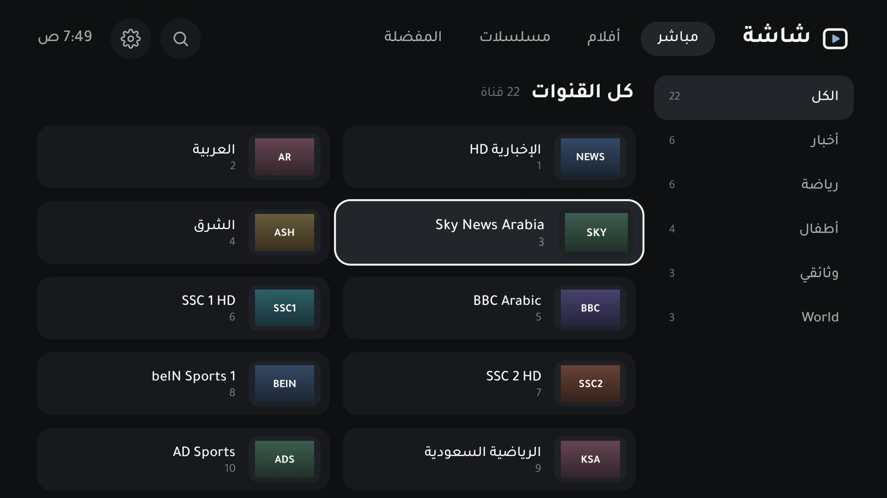
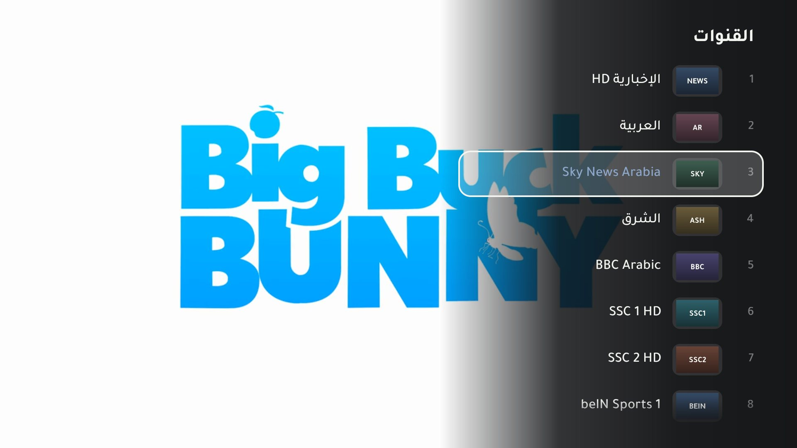
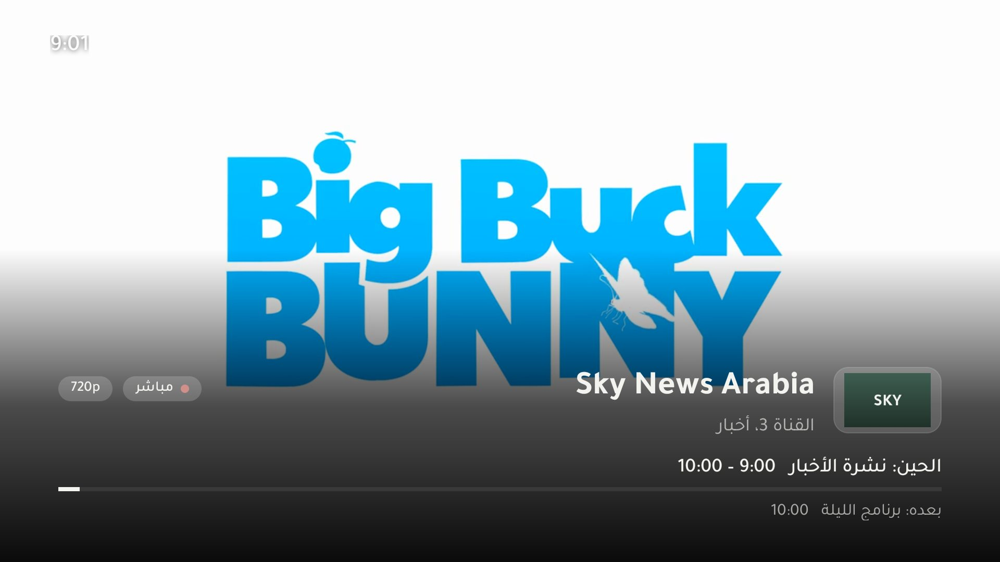
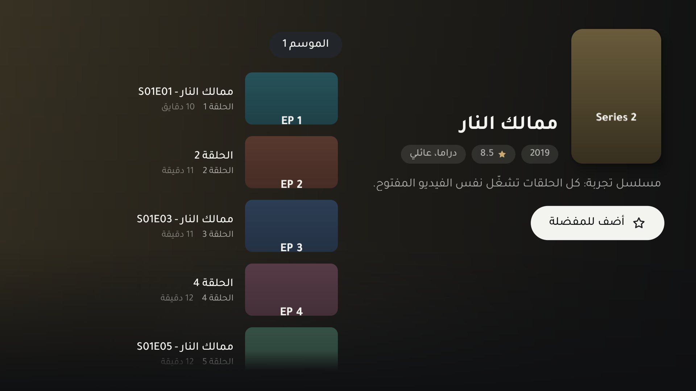

اشتراكك،
على شاشتك.
مشغّل IPTV عربي مفتوح المصدر للتلفزيون والجوال. يقرأ حسابات Xtream Codes وروابط M3U، ويرتّب لك القنوات والأفلام والمسلسلات.
شاشة ما فيه قنوات جاهزة. تضيف بيانات اشتراكك أنت، وتبقى في جهازك.

ثبّته في دقيقتين
التطبيق ملف APK، فتثبّته بنفسك من الرابط. اختر جهازك.
- نزّل تطبيق Downloader
من متجر Google Play في التلفزيون، ابحث عن Downloader وثبّته.
- اكتب الرابط
افتحه واكتب هذا العنوان في خانة الرابط:
saadharazi.github.io/shasha/apk - ثبّته
لما يخلص التحميل اختر «تثبيت». أول مرة بيطلب إذن تثبيت التطبيقات لـ Downloader: فعّله وارجع.
- حمّل الملف
اضغط «حمّل التطبيق» فوق من جوالك.
- افتحه
من التنبيهات أو من مجلد التنزيلات.
- ثبّته
لو طلب إذن تثبيت التطبيقات للمتصفح، فعّله وارجع، وبعدها اضغط «تثبيت».
وش يسوي
مصمم للريموت أول، وعلى الجوال يشتغل باللمس.
- تشغيل ما يعلّق
- يحمّل مسبقًا لين دقيقتين قدّام، ولو انقطع البث يرجع لحاله من نفس المكان بدون ما تضغط شي.
- أضفه من جوالك
- بدل الكتابة بالريموت: افتح العنوان اللي يطلع على التلفزيون من جوالك، وعبّي بيانات اشتراكك.
- Xtream وM3U
- سيرفر واسم مستخدم وكلمة مرور، أو رابط قائمة. ولو حطيت رابط get.php يتحول لحساب Xtream لحاله.
- المباشر
- قلّب القنوات بفوق وتحت أو اكتب رقمها، وقائمة القنوات تطلع فوق البث بزر OK، مع البرنامج الحالي ووقته.
- الصوت والترجمة
- اختر لغة الصوت والترجمة ومقاس الصورة من ضغطة مطوّلة على OK.
- الأفلام والمسلسلات
- بوستر وتقييم وقصة، والمواسم والحلقات مرتبة، والحلقة اللي بعدها تشتغل لحالها.
- تابع المشاهدة
- يرجّعك لنفس الدقيقة اللي وقفت عندها، في الأفلام والحلقات.
- بحث يفهم العربي
- ما يفرق بين أ وإ وا، ولا بين ة وه، ويتجاهل التشكيل.
- المفضلة
- اضغط مطوّلًا على أي قناة أو فيلم، وتلقاه في المفضلة.
- أكثر من اشتراك
- أضف اشتراكاتك وبدّل بينها من الإعدادات، ولكل واحد مفضلته.
- خصوصيتك
- بيانات اشتراكك تبقى في جهازك. ما فيه إعلانات ولا تتبّع ولا حسابات.
من التلفزيون
صور حقيقية من تلفزيون Google TV، بقائمة تجربة.




أدوات معه
من نفس المشروع، وكلها مفتوحة المصدر.